Здесь выложен авторский перевод главы "Функции шейдеров" из известной в англоговорящей среде книги "Книга шейдеров". Код шейдеров в этом варианте перевода адаптирован для исполнения в среде Bonzomatic, а так же в примерах кода есть некоторые отличия, которые упрощают понимание того, как работают шейдеры.
* * *
Эту главу можно было бы назвать «Урок покраски забора от мастера Мияги». В предыдущих уроках мы сопоставили нормализованное положение координат x и y с красным и зеленым каналами. По сути, мы создали функцию, которая принимает на вход двумерный вектор координат (x и y) и возвращает четырехмерный вектор цвета точки (r, g, b и a). Но прежде чем мы продолжим сложные преобразования данных между двумерными и четырехмерными измерениями, нам нужно начать с чего-то более простого... намного более простого. Для начала нужно, как минимум, понять, как создавать одномерные функции и как с ними управляться. Чем больше энергии и времени вы потратите на изучение и освоение одномерных функций, тем сильнее будет ваше шейдерное каратэ.
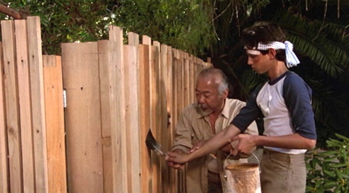
Кадр из фильма "Малыш - карате", 1984 г.
Следующая структура кода будет нашим забором. В нем мы визуализируем нормализованное значение координаты x (взятое из point.x) двумя способами: один с помощью яркости (красивый градиент от черного к белому), а другой - вычерчивая зеленую линию. Для начала сделаем линейную функцию, в которой значение x присваивается непосредственно y. Не зацикливайтесь слишком на том, как устроено рисование градиента и зеленой линии, мы рассмотрим это более подробно чуть позже.
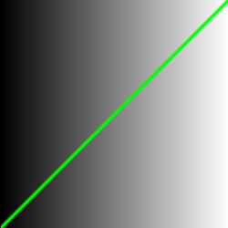
#version 410 core
uniform vec2 u_resolution;
uniform vec2 u_mouse;
uniform float u_time;
uniform vec2 v2Resolution; // viewport resolution (in pixels)
layout(location = 0) out vec4 out_color;
void main() {
// Нормализация координат текущей точки до [0...1]
vec2 point = gl_FragCoord.xy/v2Resolution;
float x = point.x;
float y = x; // Линейная функция
// Цвет Ч/Б градиента, зависит от значения функции
vec3 color = vec3(y);
// Если координаты текущей точки почти совпадают с координатами точки функции
float dist=distance( point, vec2(x, y));
if(dist < 0.005)
{
color=vec3(0.0,1.0,0.0); // Будет нарисована точка зеленого цвета
}
out_color = vec4(color, 1.0);
}
Примечание: в этом коде конструктор типа vec3 в переменной color «понимает», что вы хотите назначить трем его компонентам одно и то же значение, если задается только одно float-число. Конструктор vec4 в последней строчке понимает, что вы хотите построить четырехмерный вектор из трехмернного, где в качестве четвертого компонента берется значение, которое идет после трехмерного вектора (в данном случае это значение контролирует альфа-канал или, другими словами, непрозрачность).
Мастер Мияги говорит: "Этот код - ваш забор; это важно видеть и понимать. Кроме того, вы будете возвращаться к нормализованному промежутку между 0.0 и 1.0 снова и снова. Так вы овладеете искусством плавных переходов и формирования линий".
Пропорциональное соотношение между x и y (где через y выражена яркость) известно как линейная интерполяция. Но мы можем использовать и другие математические функции для формирования линии. Например, вместо линейной функции мы можем возвести x в степень 5, чтобы получилась изогнутая линия:
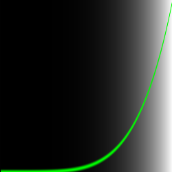
float y = pow( x, 5 );
Уже интереснее, не так ли? В строке с этой функцией попробуйте разные показатели степени: например, 20,0, 2,0, 1,0, 0,0, 0,2 и 0,02. Понимание связи между значением и показателем будет очень полезно. Использование этих типов математических функций здесь и далее даст вам выразительный контроль над вашим кодом, своего рода акупунктуру данных, которая позволит вам контролировать поток значений.
pow() - это встроенная в GLSL функция, и есть много других. Большинство из них ускоряются на уровне аппаратуры GPU, а это значит, что при правильном использовании и осмотрительности они сделают ваш код быстрее.
Замените степенную функцию на какую-нибудь другую. Попробуйте например: exp(), log() и sqrt(). Некоторые из этих функций более интересны, когда вы играете с ними, используя число PI. Его значений можно определить в начале кода через макрос:
#define PI 3.14159265359
Если шейдер компилируется правильно, но вы видите однотонный экран (черный или белый), это значит, что в диапазоне x=[0...1] значения y не попадают в диапазон [0...1]. В этом случае попробуйте помножить или поделить параметр функции. Например, вместо log(x) можно написать:
float y = log(x*10);
И тогда получится более осмысленный результат.
Функции step() и smoothstep()
GLSL имеет некоторые уникальные собственные функции интерполяции с аппаратным ускорением.
Интерполяция step() получает два параметра. Первый - это порог (или предел), а второй - это значение, которое мы хотим проверить. Любое значение ниже порога вернет 0,0, а все, что выше порога, вернет 1,0. Попробуйте изменить это пороговое значение в следующей функции:
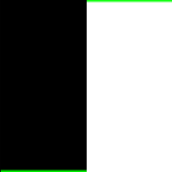
float y = step( 0.5, x );
Вторая уникальная функция известна как smoothstep(). Эта функция будет интерполирует значение в пределах заданного диапазона. Два первых параметра обозначают начало и конец диапазона, а третий - это значение, которое будет интерполироваться. Начало и конец диапазона, а так же входящее значение лучше представлять в нормированном виде в диапазоне [0...1], но эта функция так же способна работать и с обычными, ненормированными значениями.
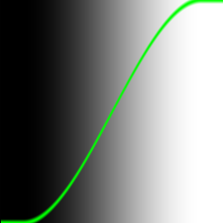
float y = smoothstep(0.1, 0.9, x);
На рисунке видно, что график имеет две прямые области в начале и в конце кривой. Эти области как раз и определяются первым и вторым коэффициентом. График в средней область плавно изменяет свое значение.
А теперь можно попробовать комбинацию из двух функций smoothstep():
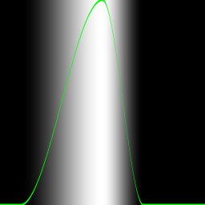
float y = smoothstep(0.1, 0.5, x) - smoothstep(0.5, 0.7, x);
Следующая информация важна для понимания. В оригинальной статье для отрисовки зеленой линии использовался другой подход. Код для функции pow() (и всех последующих примеров) выглядел так:
#define PI 3.14159265359
uniform vec2 u_resolution;
uniform vec2 u_mouse;
uniform float u_time;
uniform vec2 v2Resolution; // viewport resolution (in pixels)
float plot(vec2 st, float pct){
return smoothstep( pct-0.02, pct, st.y) -
smoothstep( pct, pct+0.02, st.y);
}
void main() {
vec2 st = gl_FragCoord.xy/v2Resolution;
float y = pow(st.x, 5.0); // Исследуемая функция
vec3 color = vec3(y);
float pct = plot(st, y);
color = (1.0-pct)*color+pct*vec3(0.0, 1.0, 0.0);
gl_FragColor = vec4(color, 1.0);
}
В этом коде функция plot() служит для генерации цвета не в режиме "либо цвет градиента, либо зеленый", а в режиме плавного перехода к зеденому, причем переход очень короткий, шириной 0.02. Для получения зеленого цвета используется "колокольная" функция, которая, как показано выше, просто состоит из разницы двух функций smoothstep().
Цвет конечной точки экрана вычисляется очень хитро, по формуле:
color = (1.0-pct)*color+pct*vec3(0.0, 1.0, 0.0);
Сказать, что автор перевода полностью понимает, как работает эта функция, было бы неправдой. Здесь видно, что первоначальный оттенок серого, помещенный в переменную color, умножается на "обращенное" значение оттенка зеленого pct. А сам оттенок зеленого умножается на чистый зеленый цвет. После чего эти два цвета смешиваюся путем сложения. Автор перевода может предположить, что таким образом те места картинки, где нет оттенка зеленого (где pct=0), рисуются просто оттенками серого. А там где появляется ненуливое значение pct, отрисовка идет с подмешиванием зеленого цвета.
Почему авторы оригинальной статьи использовали такой сложный и неочевидный метод? Возможно потому, что функция smoothstep() аппаратно ускоряется на GPU, в то время как оператор условного перехода, более понятный для человека, на GPU выполняется медленно. С другой стороны, возможно, авторы оригинала хотели продемонстрировать генерацию плавной (сглаженной) картинки, и сразу же показали приемы как этого добиться.
Синус и косинус
Синус и косинус - ваши лучшие друзья, когда вы используете математику для анимации, построения фигур или смешивания значений.
Эти две базовые тригонометрические функции построения окружности удобны, как швейцарский армейский нож, и обычно они используются в паре. Очень важно знать как они себя ведут и какими способами могут быть скомбинированны. Вкратце, они принимают угол в радианах и возвращают координаты x (косинус) и y (синус) точки на окружности единичного радиуса. Тот факт, что они возвращают нормализованные значения (между -1 и 1) и при этом значения плавно изменяются, делает их незаменимым инструментом демокодера.
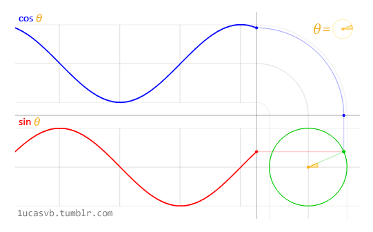
Функции sin() и cos().
Анимация прикреплена к записи.
Описать быстро и просто все взаимоотношения между кругами и тригонометрическими функциями довольно затруднительно, но пркрепленная к статье анимация отлично их демонстрирует.
Немного практики
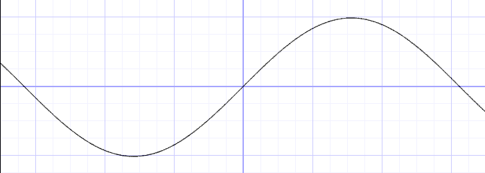
y = sin(x);
Внимательно присмотритесь к синусоидальной волне. Обратите внимание на плавное изменение значения y между -1 и 1. Как мы видели в примере со временем в предыдущем параграфе, это ритмичное поведение синуса sin() можно использовать в анимациях. В оригинале статьи в браузере, вы можете поизменять формулу выше и пронаблюдать как изменяется волна. Не забывайте ставить точку с запятой в конце строки. Изменения происходят сразу же, если в коде нет никаких ошибок.
Попробуйте проделать следующие действия и посмотрите что происходит:
Другие полезные функции
В конце предыдущего упражнения мы затронули несколько новых функций. Теперь давайте поэкспериментируем. На странице оригинальной статьи попробуйте раскомментировать строки в коде ниже по одной. Запомните эти функции и изучите их поведение.
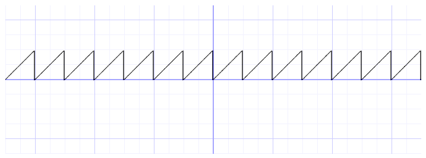
y = mod(x,0.5); // x по модулю 0.5
// y = fract(x); // возвращает дробную часть аргумента
// y = ceil(x); // ближайшее целое, большее либо равное x
// y = floor(x); // ближайшее целое, меньшее либо равное x
// y = sign(x); // знак x
// y = abs(x); // абсолютное значение x
// y = clamp(x,0.0,1.0); // ограничение x промежутком от 0.0 до 1.0
// y = min(0.0,x); // меньшее из x и 0.0
// y = max(0.0,x); // большее из x и 0.0
Возможно, вы спросите, зачем это нужно? Быстрый поиск в Интернете по запросу "generative art" (генеративное искусство) даст ответ. Помните, что пока мы осваиваем перемещение в одном измерении, вверх и вниз. Но скоро мы перейдём к двум, трём и даже четырём измерениям!
Anthony Mattox (2009)
Продвинутые функции
Голан Левин написал отличный учебник по более сложным функциям, которые могут понадобиться. Начните собирать вашу собственную библиотеку полезных кусочков кода с портирования этих функций на GLSL.
|
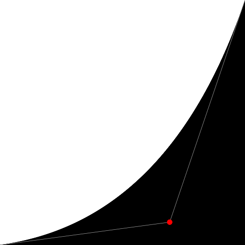 |
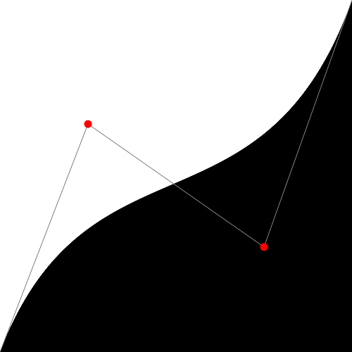 |
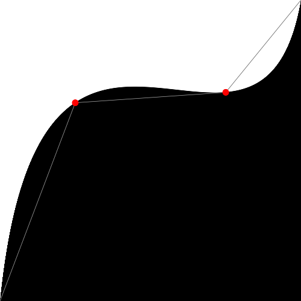 |
@kyndinfo - 2016
Подобно поварам, собирающим специи и экзотические ингридиенты, цифровые художники уделяют особое внимание работе над своими собственными формообразующими функциями.
Иниго Квилес собрал хорошую коллекцию полезных функций. После прочтения его статьи посмотрите на реализацию этих функций на GLSL. Обратите внимание на незначительность потребовавшихся изменений. Например, пришлось использовать точку в числах с плавающей точкой и заменить функций из языка C на их GLSL-аналоги: pow() вместо powf() и т.п.
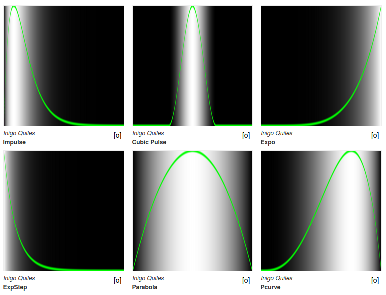
Для поддержания вашего вдохновения, посмотрите на прекрасный пример использования одномерных функций, написанный демосценером Danguafer на ShaderToy.
В следующей главе мы сделаем ещё один шаг. Сначала мы займемся смешиванием цветов, а затем перейдём к рисованию фигур.
Упражнение
Рассмотрите таблицу с формулами, созданную демосценером Kynd. Он комбинирует функции и их свойства, чтобы выдавать значения между 0.0 и 1.0. Попробуйте воспроизвести эти функции самостоятельно. Помните, что чем больше вы тренируетесь, тем лучше станет ваше карате.
Полный размер этой картинки с функциями прикреплен к данной статье.
Инструментарий
Здесь собраны ссылки на инструменты, которые упростят визуализацию одномерных функций.
Grapher: если у вас компьютер с операционной системой MacOS, введите grapher в spotlight и воспользуйтесь этим инструментом на десктопе.
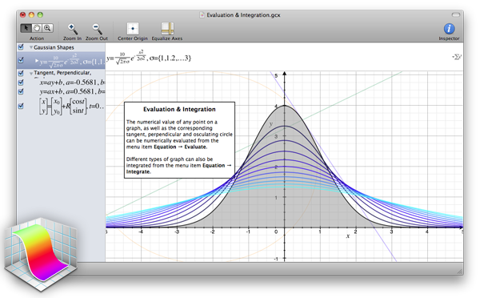
Grapher в OS X (2004)
GraphToy - уже знакомый нам демосценер Иниго Квилес написал онлайн-инструмент для визуализации GLSL-функций в WebGL:
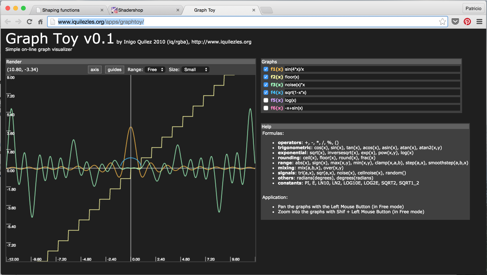
Иниго Квилес - GraphToy (2010)
Shadershop - еще один замечательный онлайн-инструмент, созданный Тоби Шахманом, научит вас конструировать сложные функции необычайно наглядным и интуитивным способом.
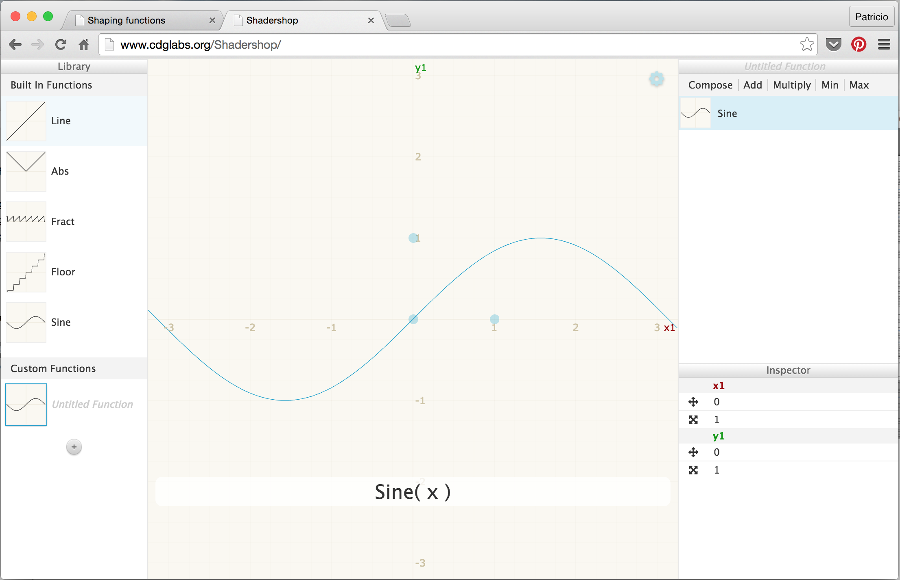
Тоби Шахман - Shadershop (2014)